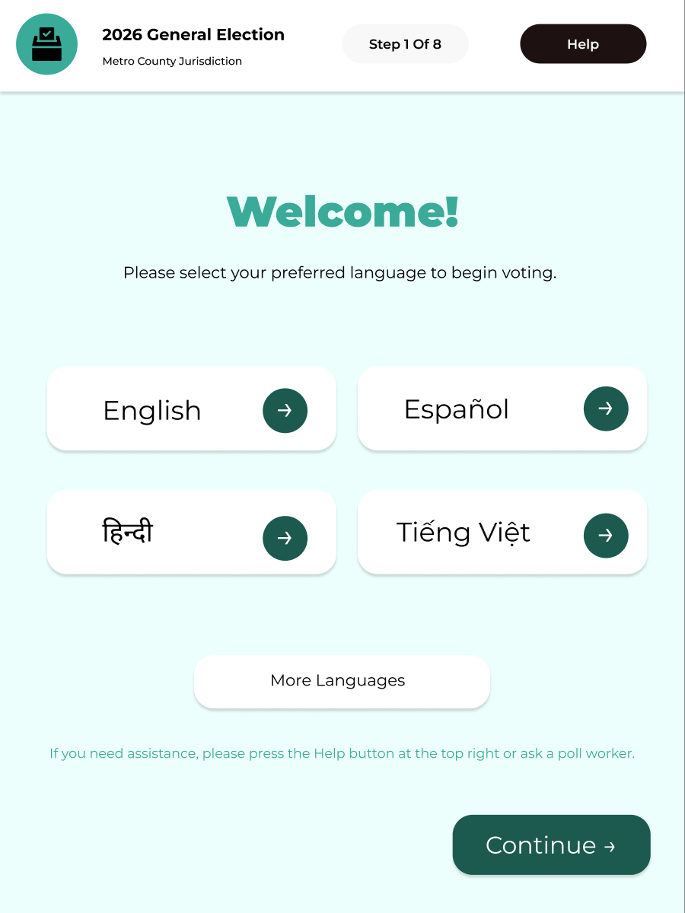
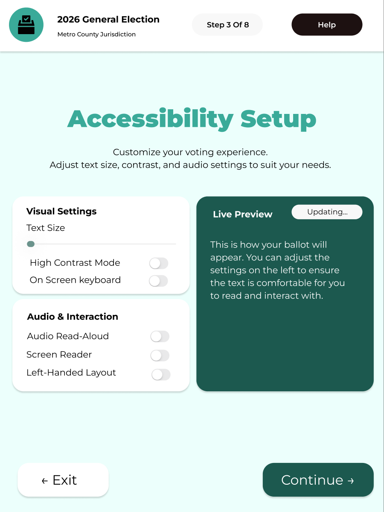
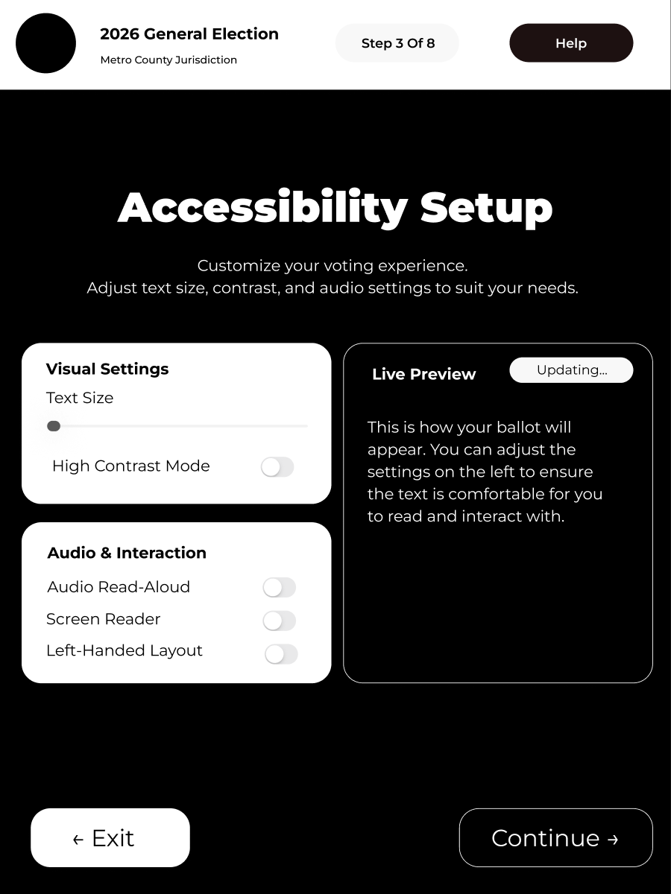
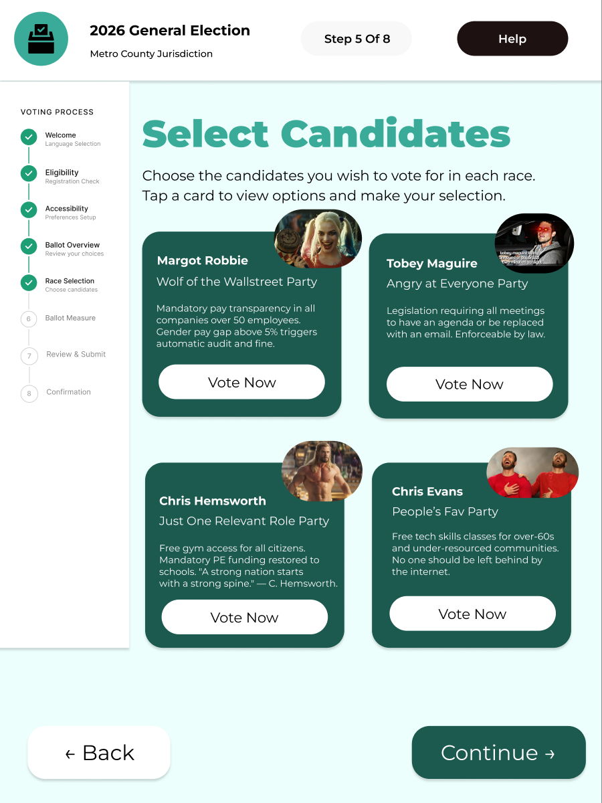
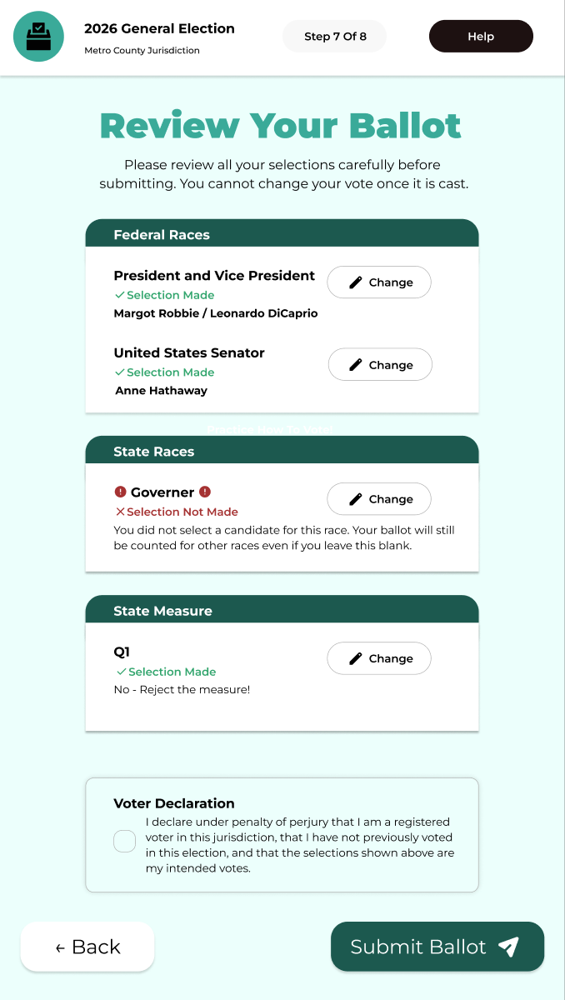
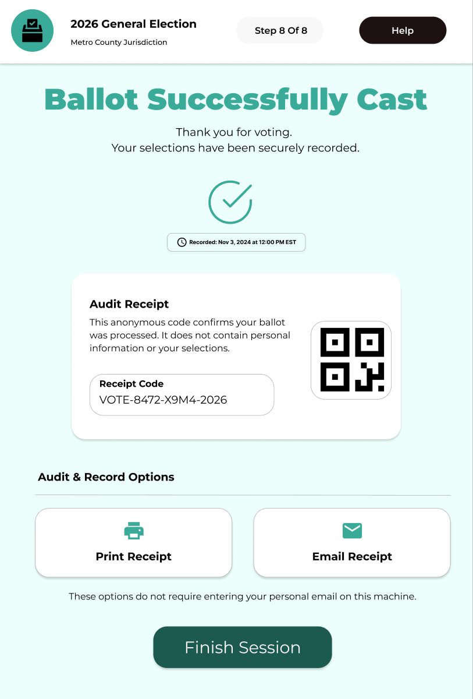

The voting machine is a civic interface that fails its most vulnerable users
Current voting machine UIs are cluttered, hard to read, and offer almost no support for
voters with language barriers, low tech literacy, or physical and cognitive disabilities.
For a Computer Interface Design class project, I redesigned the end-to-end voting flow, from language selection through ballot confirmation, grounded in structured interviews and
disability regulation frameworks studied in a concurrent Disability and Technology course.



Language selection, step one
Accessibility preferences
High contrast mode
Two very different voters. The same broken system.
We ran 5 structured interviews with voters ranging from 19 to 55: first-timers,
immigrant voters, and seasoned poll-goers. Each session followed the same protocol: walk us through
your last voting experience, describe what confused you, and tell us what would have helped.
Interview matrices were synthesised across demographics, behaviors, pain points, and goals.
Two personas emerged that anchored every design decision.
Henry
21 · First-time Undergraduate Voter
"I find the voting process confusing; the steps lack clarity. I don't know much about
local candidates and wish there were an easier way to learn about them on the ballot itself.
I simply hope for a simpler guide through the entire process."
Pain Points
- No step-by-step guidance through registration or voting
- Limited knowledge of local candidates on the ballot
- No accessible way to research candidates at the point of voting
- Uncertainty about whether the vote was properly recorded
Goals
- Clear, guided process from start to finish
- Easy access to candidate context directly on the ballot
- Confidence that his vote was counted correctly
Hanh Tran
50 · Vietnamese-American Voter
"The words on the ballot are hard to understand, the print is too small, and the
bubbles are difficult to fill in. After a long day of work, I'm tired of waiting in
line, and terrified of making a mistake I can't undo."
Pain Points
- Legal jargon on ballot measures is inaccessible
- Small text and difficult-to-fill bubbles cause physical strain
- No Vietnamese language option throughout the flow
- No clear confirmation that the vote was successfully cast
Goals
- Full Vietnamese language support across all screens
- Large, easy-to-select touch targets
- Forgiving error prevention: easy to go back and correct
Shared pain points across all 5 interviews:
- Unclear, step-less instructions
- Confusing eligibility feedback
- No candidate info at point of voting
- Small text & difficult inputs
- Language barriers
- No confirmation vote was recorded
- Fear of irreversible mistakes
- No guidance for first-time voters
- Inconsistency across voting methods
Designing within and beyond what the law requires
Running parallel to this project, I took a Disability and Technology course where we
studied the legal frameworks that govern accessibility in civic systems. Three regulations
directly shaped the scope of this redesign.
HAVA 2002
The Help America Vote Act requires every polling place to have at least one accessible
voting system, one that allows voters with disabilities the same privacy and independence
as any other voter. Prior ballot designs widely violated this.
ADA Title II
State and local governments must make programs, activities, and services equally accessible
to people with disabilities. Voting is a government service, so every screen in the
flow must meet this standard.
WCAG 2.1 AA
The Web Content Accessibility Guidelines' four principles (Perceivable, Operable,
Understandable, Robust) formed the design checklist for every interaction state, contrast
ratio, and input control in the prototype.
From this research, I compiled a list of concrete design accommodations addressing physical,
cognitive, sensory, and language-based needs:
-
1
Large, high-feedback touch targets
Big bubbles and buttons that visibly change color when selected, eliminating guesswork about whether a selection was registered.
-
2
Candidate context at point of voting
Brief 2–3 sentence summaries of each candidate's background, party endorsement, and photo, displayed directly on the ballot so no prior research is required.
-
3
Error prevention at every step
- Back button available on every screen
- Real-time warnings when a required field is skipped
- "Are you sure?" confirmation before submission
- Full review screen showing all selections before final submit
- Submission confirmation so voters know their vote was received
-
4
Full multilingual support
All ballot text, candidate information, instructions, and error messages available in the voter's chosen language, selected on the very first screen.
-
5
Plain-language ballot measures
Propositions and measures rewritten in accessible language, without legal jargon, ensuring voters understand what they are actually deciding.
-
6
Guided voting onboarding
A clear, step-by-step flow explaining each stage of the voting process before and while it unfolds, designed for first-time voters like Henry.
-
7
Persistent accessibility controls
Adjustable text size, high-contrast mode, and audio readout / screen reader support, available on every screen, not buried in settings.
-
8
Motor accessibility
- Oversized touch targets for voters with limited fine motor control
- Full physical keyboard compatibility for switch-access devices
-
9
Cognitive load reduction
- One decision per screen: progressive disclosure to prevent overwhelm
- Maximum one tooltip open at a time
- Visual hierarchy that always leads with the most critical information
- Progress indicator visible throughout the flow
Every decision earned by the research
The redesign covers 8 steps: identity verification, accessibility setup, guided onboarding,
candidate selection, ballot measures, review, and confirmation. Key decisions:
language selection before anything else,
candidate context at the point of voting,
back buttons on every screen, and a
dedicated review step before submission.



Candidate selection with context
Review before submitting
Unambiguous confirmation
View full prototype in Figma →
Accessibility is not a checklist. It's a lens.
Going into this project, I thought accessibility meant contrast ratios and alt text. The
interviews dismantled that. Henry wasn't failing because of a visual impairment; he was
failing because the system assumed prior knowledge he didn't have. Hanh wasn't struggling
because of a disability; she was struggling because the entire interface was built for
someone with a law degree and 20/20 vision.
Studying HAVA, ADA Title II, and WCAG in parallel gave me a framework, but the interviews
gave me the why. Regulations tell you the floor; they don't tell you what a good experience
feels like. The most useful design questions I learned to ask weren't "does this meet Section
508?" but "what does this user have to already know for this screen to make sense? And is
that fair to assume?"
If I continued this project, I'd test with voters who rely on screen readers and switch-access
devices, groups underrepresented in our five interviews. I'd also explore what a mail-in ballot
redesign could look like, since inconsistency across voting methods was a recurring frustration
that the digital interface alone can't fully solve.